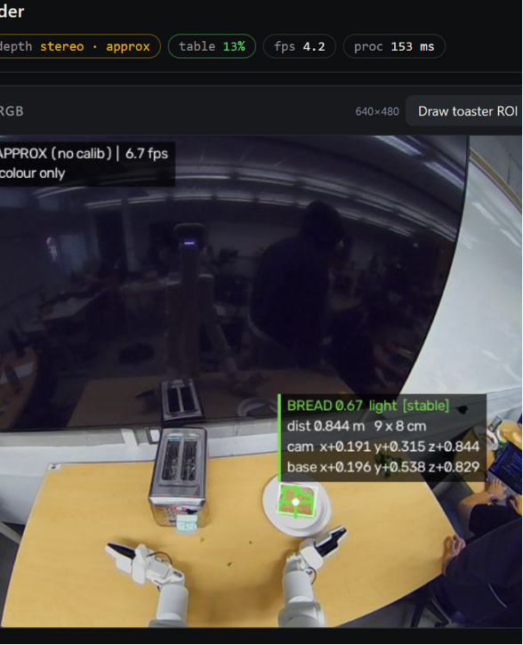
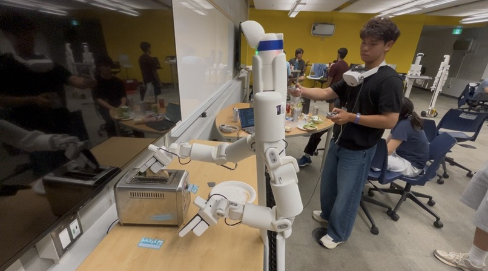
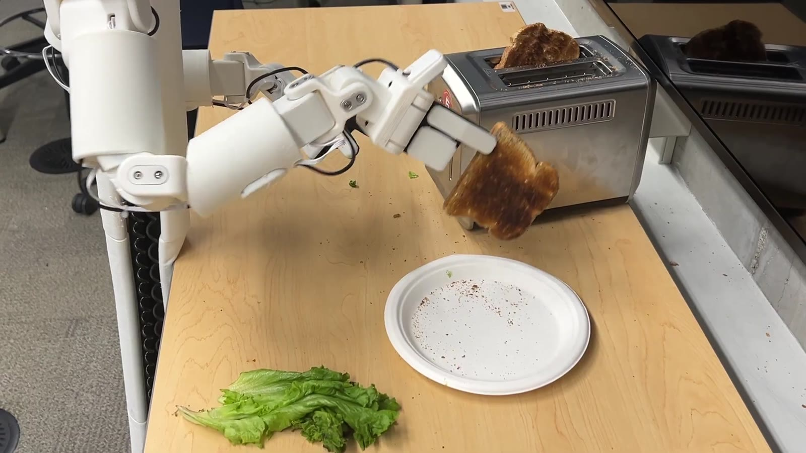
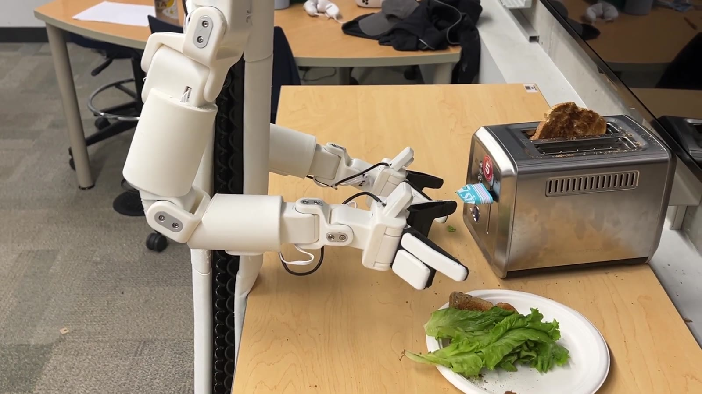

Bracket Bot · Battle of the Schools, UMIST
The Brackey Way
A dual-arm Bracket Bot that makes a sandwich on its own. It takes a slice of toast out of the toaster, puts it on a plate, adds lettuce, and places a second slice on top. Once it starts, nobody controls it.
1st place at Battle of the Schools, UMIST. UofT AI vs. WAT.ai (Waterloo AI club). Won four Bambu Lab P1S 3D printers.
π₀ VLAFine-tuningImitation learningOpenCVInverse kinematicsFinite state machineMeta Quest teleop
Full uncut run, played back at 1.5×.
System overview
The robot uses two types of controllers. For grasps where the object's position changes a lot, like taking toast out of a toaster, it uses a π₀ VLA model fine-tuned on our own demonstrations. For grasps where the object is easy to find by color, like lettuce, it uses OpenCV and inverse kinematics. A learned policy needs a lot of training data and a GPU to run. A classical pipeline is quick to build, but only works when the object is easy to detect. A finite state machine decides which controller runs at each step.
When a state ends
Every manipulation state ends with the arm moving back to a home pose. To check this, the state machine compares the current joint angles to the home joint angles. Once the difference stays below a small threshold, the state is done and the machine moves on.
Because every state ends at the same home pose, the two controllers do not need to share any information. After the VLA places the bread, the state machine waits for the arm to reach home, then starts the lettuce pipeline.
Choosing the next state
The order of steps is not hard-coded. Before each transition, the head camera checks the plate to see what is missing: no bread, bread but no lettuce, or lettuce but no top slice. The result picks the next state. If a grasp fails and the plate is still empty, the machine runs the same state again.


Grasping toast: fine-tuning a π₀ VLA
Taking toast out of a toaster is a hard grasp. The slot limits the angle the gripper can come in from, the bread sits at a different height and angle each time, and the metal toaster makes depth readings noisy. Handling all of these cases with hand-written code would take too long.
Instead, we fine-tuned π₀, a Vision-Language-Action (VLA) model, on our own demonstrations. A VLA takes camera images and a text instruction as input and outputs robot actions. It learns the motion from examples instead of hand-written rules.
Collecting demonstrations
We controlled the robot's arm with a Meta Quest headset and recorded over 100 episodes of grabbing a slice and placing it on the plate. Between episodes, we moved the toaster and the plate and changed the angle of the bread. If every episode uses the same setup, the model only learns one fixed path and fails when anything moves. Changing the setup helps the model work with new positions.

Supervised fine-tuning and DAgger
For training the model, the input is the video footage and prompt, while the output is the joint orientation velocity, position, etc. With this information, the robot learns to "imitate" the teleoperaed actions, hence the term imitation learning. Since we train this data on a foundation model (pi0), the model is able to learn this motion from an unknown environment. This is supervised fine-tuning (behavior cloning), starting from π₀'s pretrained weights instead of training from scratch.
Behavior cloning has a known problem. The model only sees states from good human demonstrations, so when it makes a small mistake it ends up in a state it has never seen, and the errors add up. DAgger (Dataset Aggregation) helps with this. We run the current policy, record the states it reaches, have a human label the correct action for those states, add that data to the training set, and retrain. After a few rounds, the dataset also covers the states the policy reaches on its own.
Syncing camera frames with actions
The joint data and camera frames are recorded at different rates. Joint states arrive at about 65 Hz, the cameras run at about 5 frames per second, and neither rate is perfectly steady. If each frame is paired with the nearest joint reading or matched by index, some actions get paired with the wrong frame, and the model trains on incorrect labels.
To fix this, we resampled both streams onto the same fixed time grid. Each time step holds the camera frame at that time and the chunk of actions that came right after it.

Grasping lettuce: OpenCV and inverse kinematics
Lettuce is much easier to find. It is the only large, bright green object on the table, so a simple color filter works and there was no need to train a model for it.
The head camera image is converted to HSV and filtered with hue, saturation, and value ranges tuned for the room's lighting. This gives a binary mask. The center of the largest blob is converted to a 3D point, and inverse kinematics calculates the joint angles needed to move the gripper there.
Moving straight to that point (open loop) was not accurate enough. Small errors in the head camera calibration made the gripper miss by 1–2 cm. To correct this, the wrist camera takes over as the arm gets close and adjusts the gripper's position and angle every frame until the lettuce is centered (closed loop). The head camera gives a rough target, and the wrist camera does the fine adjustment.


The biggest problems were not with the ML. First, uploading 100+ episodes over the venue WiFi kept failing partway through, so we had to restart the upload several times before we could train.
Second, the GPU for training and inference was remote, so every control step had network delay. The robot moved slowly, and testing each change took much longer than it should have. With a short deadline, this slowed us down the most.
Result
The robot made a full sandwich with no human control: toast from the toaster onto the plate, lettuce on the toast, then the top slice. The state machine ran the whole sequence and repeated a step when it failed.
The project won 1st place at Battle of the Schools at UMIST, a competition between UofT AI and WAT.ai (Waterloo's AI club). The prize was four Bambu Lab P1S 3D printers.

What I learned
Only use a learned model where it is needed. The VLA was worth the effort for the toaster grasp, where the setup is different every time. For the lettuce, a color filter was enough. Deciding this early let us finish in one weekend.
Add variation to the training data. During teleoperation it is tempting to keep the setup the same so the demonstrations look clean, but then the policy only learns one path. Moving the toaster and plate between episodes made the biggest difference in how well the policy worked.
Plan for infrastructure early. WiFi speed and GPU latency affected this project more than any design choice. When working with real hardware, they need to be considered from the start.